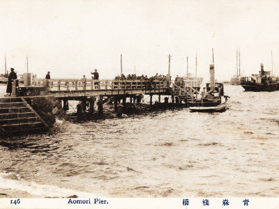
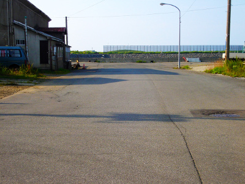

浜町桟橋跡地
-「私たちは、この桟橋に行く事を好んだ」(太宰治｢津軽｣)-
写真をクリックすると拡大表示します。 
{kind=link}
{kind=link}
太宰治が「津軽」において、「私の初期の小説」と記す「思ひ出」（1933年、同人雑誌に発表）。
青森市在住の4年間（1923～1927年）に関し、
「その頃の私の生活に就いては」「かなり克明に書かれてある」とする作品です。
この自伝的小説には、旧制中学校の生徒である「私」が、弟と「港の桟橋へ出て」、
中国の故事に由来する「赤い絲」伝説について話す場面が描かれています。
「海峡を渡ってくるいい風にはたはたと吹かれながら・・」
「海峡を渡って来る連絡船が・・ゆらゆらと水平線から浮かんで出た」
「津軽」（1944年刊行）には、「思ひ出」におけるこの桟橋での場面を引用しつつ、
「当時、私たちは、この桟橋に行く事を好んだ。冬、雪の降る夜も、傘をさして 弟と二人でこの桟橋に行った。深い港の海に、雪がひそひそ降ってゐるのはいいものだ」と 記されています（「太宰治全集第六巻」筑摩書房 1990）。
太宰治の青森市在住時、同市に桟橋は2つ、防波堤が１つありました。
複数の方への取材を含めた諸調査の結果から、
10代の太宰治が桟橋で海を眺めていたことは事実で、その桟橋とは浜町桟橋（写真左 提供：青森県史編さん室）、 という結論に至りました。
太宰治の下宿先の筋向かいから海手へ直進する道は、桟橋通りと呼ばれ、 5分も歩くと浜町桟橋に出ました。
青森港の整備前、連絡船など大型船へ乗り継ぐ艀が発着、物資も移動した浜町桟橋。
その桟橋があった場所は埋め立てられ、今は、倉庫街の中の道路となっています（写真右）。
太宰が好んだ場所へ、想像の旅を。
散歩してはいかかでしょうか？このスポットは全ての散歩コースに組み込まれてます。青森市在住の4年間（1923～1927年）に関し、
「その頃の私の生活に就いては」「かなり克明に書かれてある」とする作品です。
この自伝的小説には、旧制中学校の生徒である「私」が、弟と「港の桟橋へ出て」、
中国の故事に由来する「赤い絲」伝説について話す場面が描かれています。
「海峡を渡ってくるいい風にはたはたと吹かれながら・・」
「海峡を渡って来る連絡船が・・ゆらゆらと水平線から浮かんで出た」
「津軽」（1944年刊行）には、「思ひ出」におけるこの桟橋での場面を引用しつつ、
「当時、私たちは、この桟橋に行く事を好んだ。冬、雪の降る夜も、傘をさして 弟と二人でこの桟橋に行った。深い港の海に、雪がひそひそ降ってゐるのはいいものだ」と 記されています（「太宰治全集第六巻」筑摩書房 1990）。
太宰治の青森市在住時、同市に桟橋は2つ、防波堤が１つありました。
複数の方への取材を含めた諸調査の結果から、
10代の太宰治が桟橋で海を眺めていたことは事実で、その桟橋とは浜町桟橋（写真左 提供：青森県史編さん室）、 という結論に至りました。
太宰治の下宿先の筋向かいから海手へ直進する道は、桟橋通りと呼ばれ、 5分も歩くと浜町桟橋に出ました。
青森港の整備前、連絡船など大型船へ乗り継ぐ艀が発着、物資も移動した浜町桟橋。
その桟橋があった場所は埋め立てられ、今は、倉庫街の中の道路となっています（写真右）。
太宰が好んだ場所へ、想像の旅を。